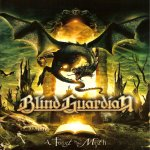

|
|
||
Blind Guardian : A Twist in the Myth (2006) |
|

http://www.blind-guardian.com |
1. This Will Never End 5:07 |
9.5/10 |
|
Más de cuatro años han pasado desde el pomposo A Night at the Opera, pero la espera ha merecido la pena: Blind Guardian ha sacado un nuevo disco y no desmerece en absoluto su ya larga trayectoria, plagada de grandes discos y de grandes canciones. Este A Twist in th Myth nos ofrece a los Blind Guardian de los últimos discos, excepto al batería Thomen Stauch que ha sido sustituido por Frederik Ehemke, en un gran momento de forma. La presentación del disco es excelente y la portada evidencia la temática de "dragones y mazmorras" alrededor de la que han hecho girar tantas de sus canciones. El potente arranque del disco, "This Will Never End", ya demuestra que Blind Guardian ha regresado por la puerta grande: desde el grito inicial de Hansi a los pomposos coros del estribillo pasando por los sólidos riffs de Marcus Siepen entrelazados con las armonías de André Olbrich, todo anticipa un gran disco. Un medio tiempo nos encontramos en "Otherland", con ese aire inquietante que la voz de Hansi Kürsch transmite de forma tan especial, cambios de ritmo, más coros melódicos y un pegadizo aunque complejo estribillo. De nuevo un comienzo espectacular para otro gran tema, "Turn the page", con fantásticos coros, otro memorable estribillo, y una increíble variedad de ritmos, sonidos y atmósferas condensados en poco más de cuatro minutos. Aunque "Fly" se usó para el single promocional de este disco, no es el mejor tema, pero de todas formas es una buena canción, más directa que la media, con marcados cambios de tempo y de fuerza, y un elaborado solo de guitarra. "Carry the Blessed Home" es una balada con momentos de gran intensidad, sobre cuando entran los coros, y a la que el acompañamiento ocasional de una gaita le da un cierto toque folk. "Another Stranger Me" es un tema un poco raro para Blind Guardian, algo más cercano al heavy metal clásico que a su propio estilo, pero plagado de las señas de identidad de la banda y que termina por ser uno de los mejores del disco. "Straight Through the Mirror" está más cercano a los primeros Blind Guardian que el resto del álbum, es algo más crudo en su desarrollo, pero el estribillo es melodioso como pocos. "Lionheart" es una canción difícil de seguir por un planteamiento complicado, que dificulta encontrar los momentos álgidos a los que debería conducir la melodía, y que aunque tiene elementos interesantes no termina de entrar. El bardo canta de nuevo en "Skalds and Shadows" una balada acústica, con arreglos de violines, sampleados me temo, y con el acompañamiento ocasional de una flauta, un precioso estribillo y la voz de Hansi en un gran momento. "The Edge" es un corte potente y oscuro, con varias capas de voces y un estribillo directo pero pegadizo. Termina el álbum un tema lento, "The New Order", con algunos desgarradores gritos de Hansi, y otro buen estribillo coral. Finalmente, reseñar que la versión en digipack tiene como bonus una versión alternativa de Fly con letras diferentes, llamada "Dead Sound of Misery". Como en todos los últimos discos de Blind Guardian, en este hay tantas capas que es difícil apreciarlo todo en las primeras escuchas. De hecho es difícil aburrirse con él porque cada vez que lo escuchas descubres algo nuevo. El disco es más directo que A Night at the Opera, pero sigue siendo elaborado, sinfónico, barroco y complejo, en el estilo perfilado en el Nightfall in Middle Earth, aunque ya apuntado en los trabajos anteriores a éste. Un trabajo sobresaliente de una de las mejores bandas del mundo. |
||
- Crítica escrita por Rubén Béjar - |
||